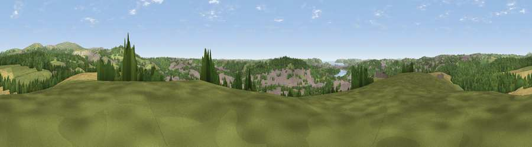

Boringdon Park
#16409 in England · top 32% of its area beats it · near Colebrook VillageThe view, rendered

A 360° render of this exact spot computed from the terrain model, tree cover and land cover — summer colours, afternoon light, calibrated against photographs of famous viewpoints. Real trees, hedges and buildings will differ in detail.
The panorama
Grey silhouette: terrain skyline in each direction (720 bearings, Earth curvature and refraction included). Dashed green: skyline with trees (+15 m) and buildings (+8 m) as obstacles. Blue strip: how far the ground is visible on each bearing.
Where the view opens
Wedge length = distance to the farthest visible ground on that bearing (vegetation-aware). Rings at 10, 25 and 50 km.
What fills the view
39% woodland · 34% grassland · 16% built-up · 8% cropland ·
Angular shares of the visible panorama (visual magnitude), not map area. Landscape diversity 0.57 (0–1 Shannon).
Key numbers
More beautiful places nearby
The staircase of upgrades: each row has a higher view potential than everything closer. Driving times are estimates from straight-line distance, calibrated against real road routing — check an actual route before setting out.
| Place | Direction | Drive | Score |
|---|---|---|---|
| Viewpoint near Sparkwell | ENE · 3 km | ~8 min | 77.6 |
| Viewpoint near Lee Moor | NNE · 5 km | ~11 min | 82.7 |
| Viewpoint near Downderry | WSW · 20 km | ~34 min | 83.5 |
| Viewpoint near Hope | SE · 24 km | ~39 min | 84.4 |
| Viewpoint near East Prawle | SE · 32 km | ~49 min | 84.6 |
| Pencarrow Head | WSW · 39 km | ~58 min | 86.0 |
| Viewpoint near Stenalees | W · 53 km | ~75 min | 88.0 |
| Viewpoint near Crackington Haven | NW · 54 km | ~76 min | 88.1 |
50.40113, -4.06099 · source: dobih hill · position refined by local search. Computed location — check access rights before visiting.